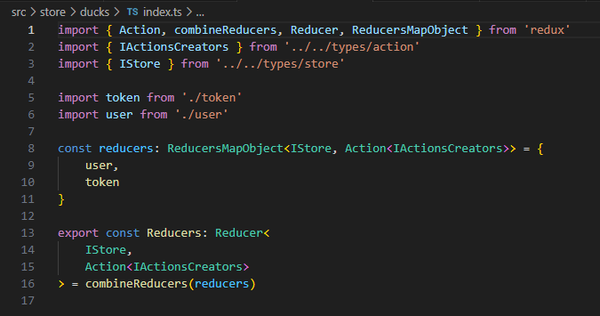
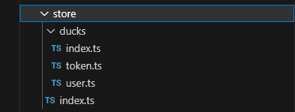
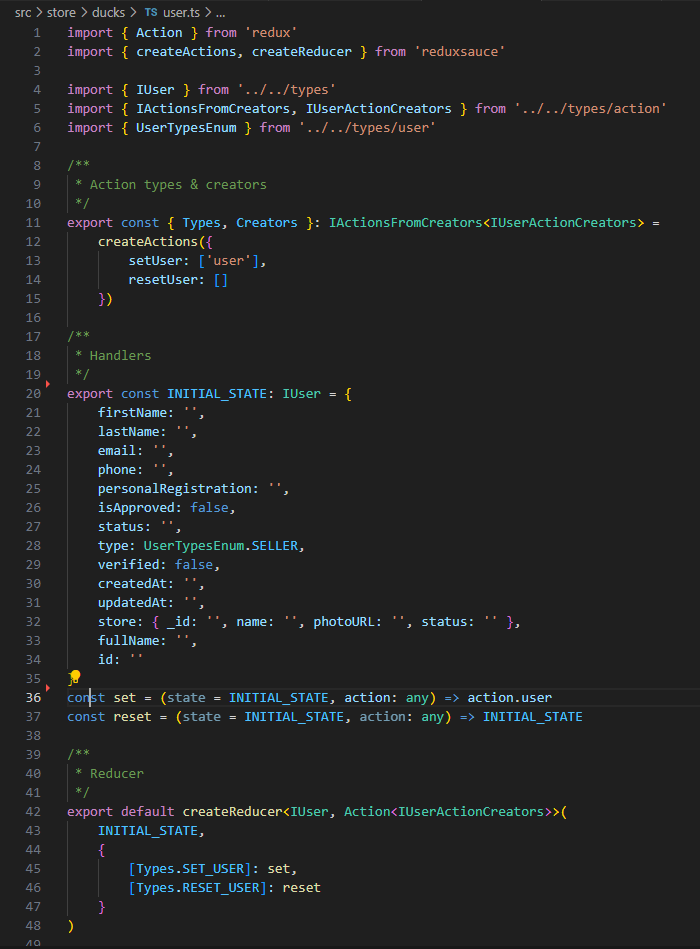
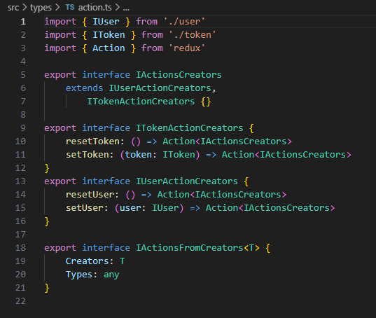

2.8- Gerenciamento de State
O que é Gerenciamento de state ?
O State é um conjunto de informações que são importantes para todo o aplicativo, no frontend (Client), e que precisam ser preservadas na memória desse cliente. Tipicamente, o state é constituído por informações do usuário logado, tais como, nome, e-mail, avatar, token, etc., mas pode incluir outros tipos de informação.
O Gerenciamento de state é simplesmente a forma como as informações do state são obtidas, salvas em um repositório na memória e recuperadas desse repositório, para uso pelos diversos componentes React do aplicativo.
Com o objetivo de evitar que cada aplicativo criado efetue esse gerenciamento de uma forma diferente e, também, para garantir que se usem as melhores e mais eficientes práticas, nos aplicativos da BuildBox usamos as bibliotecas react-redux e redux-persist, para realizar o gerenciamento de state nos Clients, tanto web quanto mobile.
A biblioteca react-redux é, basicamente, um recipiente (store) para manter todo o state do aplicativo em um repositório único, e que, ao mesmo tempo, define métodos padrão estritos para salvar e disponibilizar as informações no e do store, a partir dos componentes React do aplicativo.
A biblioteca redux-persist permite que o store do react-redux seja persistido por um storage engine, como por exemplo, o LocalStorage do navegador ou o AsyncStorage no React-Native, o que possibilita a persistência do store, mesmo após atualizações (refreshes) do navegador, reinicialização do navegador, ou até do dispositivo.
Funcionamento do React-Redux
O react-redux possui 4 componentes principais:
- Um store onde serão armazenadas as informações do aplicativo, que nos interessa armazenar.
- Um componente React, chamado Provider que é responsável por disponibilizar o store redux a todos os componentes da árvore de componentes React.. Ele envolve toda a árvore de renderização do React, permitindo que todos os componentes envolvidos tenham acesso ao store
- Ações para salvar partes específicas do state do aplicativo no store.
- Ações para ler partes específicas do state armazenado no store.
Vamos explicar como isso deve ser feito na forma padronizada definida para o código da BuildBox.
Passo 1: Copiar o código do store do Harv
O código é 90% similar em todos os aplicativos e, assim, sugere-se partir do conteúdo da pasta /src/store do projeto Harv e fazer as alterações indicadas nos passos seguintes.
Passo 2: Alterar o arquivo /src/store/index.ts

Neste arquivo, criamos o store redux e o store persistente, e os exportamos para uso pelo componente App, explicado na seção 2.3- Roteamento de páginas do Aplicativo.
Na imagem abaixo, vemos o código de renderização do componente App, onde os objetos store e Persistor, importados do arquivo /src/store/index.ts, são disponibilizados para todos os componentes React da árvore de renderização do aplicativo.

O arquivo /src/store/index.ts é igual em todos os aplicativos, exceto pelo conteúdo atribuído à propriedade whitelist do objeto persistConfig, linha 11 no código acima.
No caso do projeto Harv, usado aqui como modelo, as informações salvas são organizadas em dois objetos, um chamado 'user' e outro chamado de 'token'. Esses nomes podem variar de aplicativo para aplicativo e, portanto, devem ser alterados conforme o caso. Estas são as únicas alterações a serem feitas neste arquivo.
Passo 3: Alterar o arquivo /src/store/ducks/index.ts

No caso do projeto modelo, usado aqui, estamos organizamos as informações a serem salvas no store em dois objetos, que chamamos de user e token, e, desse modo, as linhas 5,6,9 e 10 do código acima, refletem essas definições. Caso o seu aplicativo, tenha outros nomes escolhidos, faça as alterações necessárias nestas linhas e, basicamente, isso é tudo o que precisa ser mudado neste arquivo.
Passo 4: Alterar o(s) arquivo(s) onde são definidas as ações redux
O conteúdo da pasta /src/store, no caso do nosso projeto modelo, Harv, é este

No caso de um projeto novo, a pasta /src/ducks e os arquivos de nome index.ts não sofrem alterações de nome, apenas de conteúdo, como vimos acima.
Os arquivos /src/store/ducks/token.ts e /src/store/ducks/user.ts devem ser ajustados, no nome e conteúdo, em conformidade com os tipos de objetos e informações que queremos salvar no store no novo aplicativo.
Vamos analisar o arquivo /src/store/ducks/user.ts para deixar claro seu conteúdo e o que precisa ser mudado, ou não, em novos casos.

Em primeiro lugar
As linhas de 11 a 15, do código acima, definem as ações (Actions) do store que poderão ser chamadas pelos componentes React do aplicativo para salvar informações do Usuário no store. Neste caso, setUser(...) para salvar as informações de um objeto User no store e resetUser para atribuir valores vazios ou default ao store do Usuário.
Em segundo lugar
As linhas de 20 a 37 definem as informações a serem armazenadas no store do Usuário, linhas 20 a 35, e as funções que devem ser usadas, no caso set e reset para executar as Actions definidas anteriormente.
Em terceiro lugar
As linhas de 42 a 48 criam o Reducer do objeto user que será utilizado pelo arquivo /src/store/ducks/index.ts, visto anteriormente e reproduzido abaixo, novamente.
Observe que, na linha 6, quando declaramos
import user from './user'
estamos, de fato, importando o retorno da função createReducer(...), executada na linha 42 do arquivo anterior, uma vez que esta é declarada como export default.
Alterações a serem feitas no arquivo
Considerando o apresentado anteriormente, as alterações a serem feitas neste arquivo são:
- Alterar os nomes das ações e do objeto, 'user', para os nomes apropriados.
- Alterar as interfaces utilizadas, na linha 11, e as interfaces correspondentes no arquivo /src/types/action.ts, o qual não havia sido citado ainda neste texto, e é apresentado abaixo.

- Alterar o objeto a ser salvo no store, nas linhas 20 a 35, e os nomes das funções handlers, conforme o caso.
- Alterar os nomes e interfaces utilizados em **createReducer(...), conforme os novos nomes e interfaces em uso.